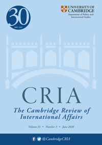

收录于合集

期刊简介

《剑桥国际事务评论》（Cambridge Review of International Affairs）于1985年创立，是国际关系同行评审学术期刊，以季刊形式发行。由剑桥大学国际研究中心（现隶属牛津大学政治与国际关系学院）编辑，Routledge出版。据2018Journal Citation Reports显示，影响因子为0.656。
本期编委
【编译】 李雯珲 缪高意 樊华 朱文菡
【审校】 丁伟航 李雯珲 缪高意
【排版】 高 鹏

本期目录
01 反思授权的锁定效应与收益：基于委托—代理视角的非洲联盟与其成员国的关系
Reconsidering lock-in effects and benefits from delegation: the African Union’s relations with its member states through a principal–agent perspective
02 看起来像个区域组织？欧洲区域一体化模式与西非经济货币联盟
Looking like a regional organization? The European model of regional integration and the West African Economic and Monetary Union (WAEMU)
03 经济相互依赖和经济制裁：欧盟制裁俄罗斯的案例研究
Economic interdependence and economic sanctions: a case study of European Union sanctions on Russia
04 共有观念如何阻碍游说成功：英国在20国集团中的偏好形成
How shared ideas may hinder lobbying success: British preference formation in the G20
05 福音派全球主义与第二次苏丹内战的国际化
Evangelical globalism and the internationalization of Sudan’s second civil war
01
反思授权的锁定效应与收益：基于委托—代理视角的非洲联盟与其成员国的关系
【题目】
Reconsidering lock-in effects and benefits from delegation: the African Union’s relations with its member states through a principal–agent perspective
【作者】
Martin Welz（康斯坦茨大学）
【摘要】
本文以委托—代理理论视角审视了非洲联盟与其成员国之间的关系。作者将非盟委员会视为代理人，成员国是授权委托人。作者将委托—代理理论的核心假设运用到非盟与其成员的关系上，包括委托人想要控制代理人，代理人的行为具有机会主义特征，在必要的时候委托人会制裁代理人，委托人之间偏好的异质性会削弱其对代理人的授权水平。然而，作者的分析也表明，委托—代理理论需要进一步扩展，以解释锁定效应和国家限制授权的原因。
【原文】
This paper explores the relations of the African Union (AU) with its member states through the lens of principal–agent theory. I consider the AU Commission—an international public administration—as an agent to which its member states—the principals—delegate authority. I show that core assumptions of principal–agent theory apply to the AU’s relations with its member states. These include that principals aim to keep control over their agent, that we find agents acting opportunistically, that principals sanction the agent if needed and that the heterogeneity of preferences amongst principals decreases the level of authority delegated to the agent. However, my analysis also suggests that principal–agent theory needs to broaden its understandings of lock-in effects and of the reasons why states limit their delegation of authority.
【编译】 李雯珲
【审校】 丁伟航
02
看起来像个区域组织？欧洲区域一体化模式与西非经济货币联盟
【题目】
Looking like a regional organization? The European model of regional integration and the West African Economic and Monetary Union (WAEMU)
【作者】
Giulia Piccolino（拉夫堡大学）
【摘要】
在所有非洲区域组织中，西非经济货币联盟是最明确遵循欧盟模式、效仿欧盟核心制度和实践的组织。考虑到欧洲与西非地区的经济、政治和地理差异，西非经济货币联盟对欧盟的模仿令人费解。本文认为，为了解西非经济货币联盟的发展轨迹，有必要关注两个相互关联的因素——一个是西非经济货币联盟的殖民遗产和后殖民依赖的历史，另一个是其模仿体现现代性和合法性标准的相似制度的动力。西非经济货币联盟的同构不仅是外部压力的结果，而且也是对不确定性的反应和职业化的结果。制度同构对于组织效力有复杂的影响。一方面，它有助于维持组织合法性；另一方面，它会抑制内生发展。
【原文】
Of all African regional organizations, the West African Economic and Monetary Union (WAEMU) is the one that has most explicitly followed the model of the European Union (EU), emulating key EU institutions and practices. WAEMU’s mimicry of the EU is puzzling, considering the economic, political and geographical differences between the European and the West African regional contexts. This article argues that, in order to understand WAEMU’s trajectory, it is necessary to look at two interrelated factors: on the one hand, the WAEMU’s history of colonial legacies and post-colonial dependence; on the other, its drive to mimic similar institutions that are seen as embodying the standards of modernity and legitimacy. The WAEMU’s isomorphism has been an outcome of external pressures, but also a response to uncertainty and a result of professionalization. Institutional isomorphism has had a mixed impact on the effectiveness of the organization, helping it to sustain its legitimacy but also stifling endogenous development.
【编译】 缪高意
【校对】 丁伟航
03
经济相互依赖和经济制裁：欧盟制裁俄罗斯的案例研究
【题目】
Economic interdependence and economic sanctions: a case study of European Union sanctions on Russia
【作者】
Paul M. Silva II &Zachary Selden（佛罗里达大学）
【摘要】
经济制裁对制裁国和目标国都施加了成本，这些成本随着有关国家之间相互依赖程度的增加而增加。本文检验了这一假设，即与俄罗斯在经济上更加相互依赖的欧盟成员国将最反对就俄罗斯2013年至2014年在乌克兰采取的行动实施制裁。然而，对实施制裁的辩论进行的分析却显示了相反的观点：经济相互依赖与欧盟成员国对制裁的支持之间存在适度的正相关。这一发现进一步质疑了经济自利与相互依赖国家间避免冲突的根本联系。
【原文】
Economic sanctions impose costs on sender as well as target states, and those costs increase with the degree of interdependence between the states in question. We test the hypothesis that EU member states that are more economically interdependent with Russia would be the most opposed to the imposition of sanctions on Russia in response to its actions in Ukraine in 2013–2014. However, an analysis of the debate over the imposition of sanctions shows the opposite: a modest positive correlation between economic interdependence and support for the sanctions among EU member states. This finding further calls into question the fundamental linkage between economic self-interest and conflict avoidance among interdependent states.
【编译】 丁伟航
【校对】 李雯珲
04
共有观念如何阻碍游说成功：英国在20国集团中的偏好形成
【题目】 How shared ideas may hinder lobbying success: British preference formation in the G20
【作者】
Laura C. Mahrenbach（慕尼黑工业大学）
【摘要】
在政策制定和游说方面，大量现有研究都集中在如何利用“共有观念”促进政策偏好的实现上。然而，对游说者的采访和近期研究表明，“共有观念”也可能会阻碍游说的成功——这是一个迄今为止基本上被忽视的话题。首先，本文将描绘游说过程中彼此“共享观念”的两个角色，并以此来着手解决这一问题：其中一个角色是负责与政界人士进行沟通的“破冰者”；另一个角色则是用来追求特定利益的“工具人”。随后，本文提出了 “共有观念”可能会促进或阻碍游说成功的几种路径，并以英国在20国集团(G20)税收改革谈判期间的偏好形成，来说明其发挥作用的机制。同时，本文在试图分析观念如何影响游说成功的过程中，还强调了战略机构和行动者沟通策略互动的重要性，以及纳入观念的多义性对在政治领域研究观念作用的价值。
【原文】
Much existing work on ideas in policymaking and lobbying has focused on how shared ideas can facilitate achievement of policy preferences. However, interviews with lobbyists and recent research indicate shared ideas may also hinder lobbying success—a topic largely ignored to date. I begin to address this gap by mapping two roles for shared ideas in lobbying processes: as icebreakers to facilitate communication with politicians and as instruments in pursuit of specific interests. I subsequently propose pathways via which shared ideas may facilitate or hinder lobbying success and illustrate these mechanisms in case studies examining British preference formation during G20 negotiations over tax reform. The analysis underlines the crucial role of strategic agency and the interaction of actor’s communication strategies when seeking to understand how ideas affect lobbying success. it highlights the value of explicitly incorporating ideas’ multivocality into studies of ideas’ role(s) in politics.
【编译】 樊华
【校对】 丁伟航
05
福音派全球主义与第二次苏丹内战的国际化
【题目】
Evangelical globalism and the internationalization of Sudan’s second civil war
【作者】
Jonathan C. Agensky （俄亥俄大学）
【摘要】
基督教福音派在第二次苏丹内战（1983年-2005年）的国际化中所发挥的作用，展现了基于信仰对南半球进行干预造成的多重影响。福音主义是全球扩张最迅速的当代宗教派系之一。与南苏丹的接触，对北半球福音派成为独特且关键的国际力量至关重要。这一接触深刻地改变了原本对于宗教组织这类主体、其新兴政治及其在全球治理关系中的地位的预设。本文认为，有关苏丹内战的政治，标志着一个基于信仰的宣传和人道主义的全球时刻的到来，而这与一个不断深嵌全球的福音主义是密不可分的。
【原文】
The roles played by evangelical Christians in the internationalization of Sudan’s second civil war (1983–2005) illustrate the multidirectional effects of faithbased interventions into the global south. Evangelicalism is one of the most rapidly expanding contemporary religious forms in the world. The engagement of South Sudan by evangelicals of the global north has been a major moment in its formation as a unique and critical international constituency. This work unsettles deeply rooted assumptions about these types of actors, their emergent politics and their locations in global governance relations. I argue that the politics of Sudan’s civil war represents a global moment in faith-based advocacy and humanitarianism, which is deeply implicated in a globalizing and globally-engaged evangelicalism.
【编译】 朱文菡
【校对】 缪高意

添加 “国小政”微信，获取最新资讯


好好学习，天天“在看”